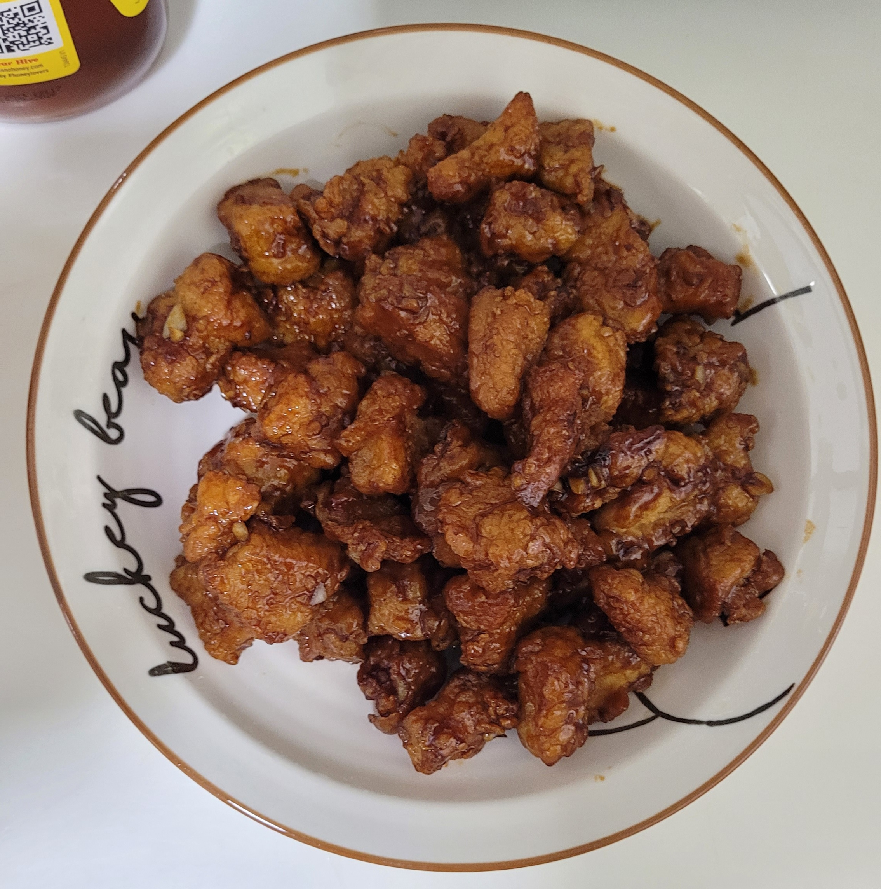

Marmite Chicken

Description
Marmite Chicken???!!! How could it possibly taste so good?!
Ingredients
Serving size: 2 people
Marinade
- 300g boneless chicken thigh/breast
- 1 tsp salt
- 1/4 tsp white pepper
- 1 tbsp sesame oil
- 1 tsp light soy sauce
- 1 tbsp. cornstarch
- 1 tbsp. rice wine
- 1 egg, beaten
Coating
- 1/2 cup flour
- 1/2 cup cornstarch
- 1 tsp. baking soda
Sauce
- 2 tsp (10g) Marmite
- 2 tsp light soya sauce
- 1.5 tbsp honey
- 1 tsp sugar
- 45ml (3 tbsp) hot water
Garnish
- Red chillies, sliced
- Coriander
Instructions
- Marinate the chicken pieces with ingredients B for thirty minutes.
- Prepare sauce ingredients and set aside.
- Combine the cornstarch and baking soda and coat the marinated chicken.
- Double deep fry the chicken until golden brown and crispy. Remove and drain on a paper towel.
- Heat the sauce mixture until it becomes a thick gravy.
- Add in chicken and toss the chicken to coat with gravy.
- Garnish and serve.